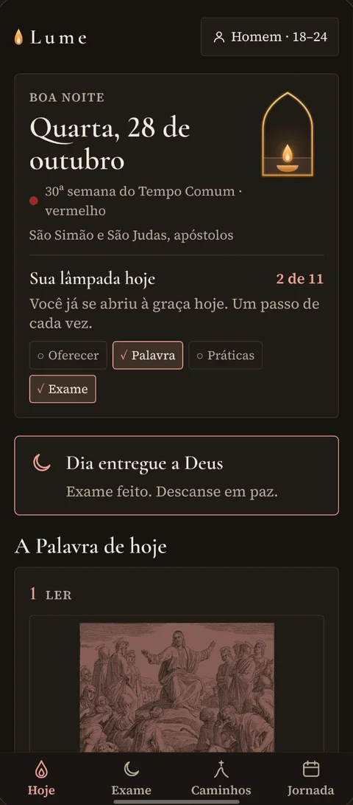
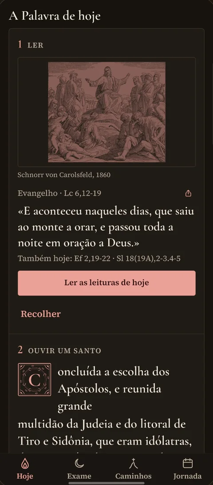
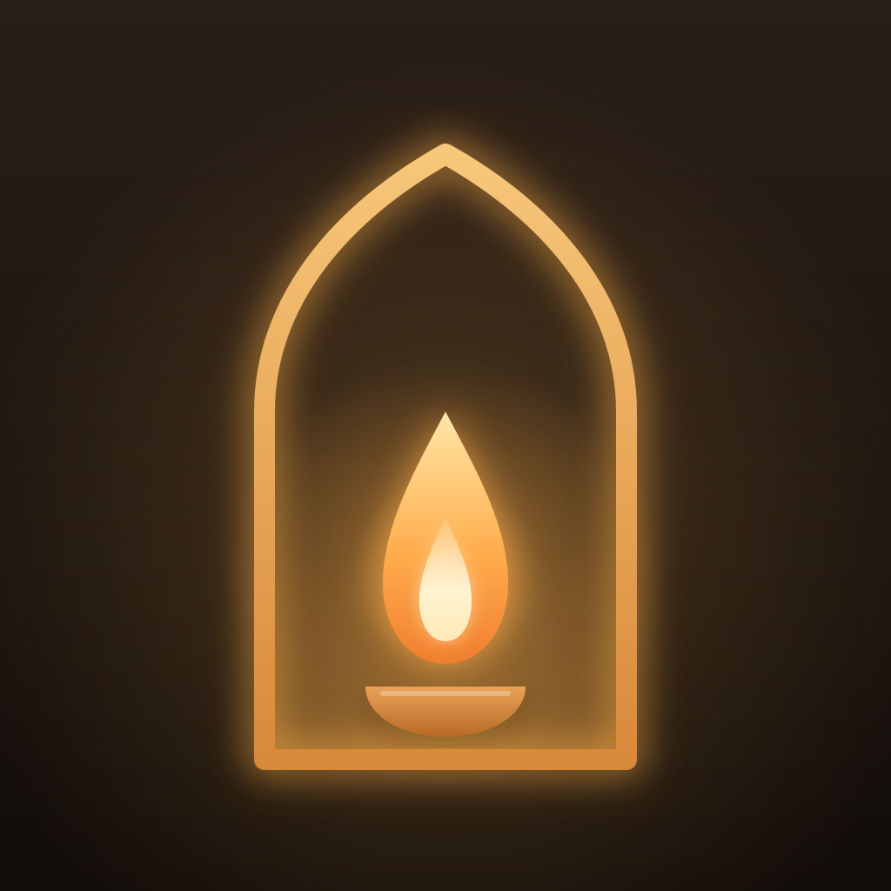

1 · Alimento
A Palavra e os santos
O Evangelho do dia em texto completo e uma passagem direta de um santo, ligada à liturgia, sempre com a fonte.
Regra de Vida Católica
O Lume reúne a liturgia do dia, as palavras dos santos, a oração e a caridade num só lugar, para você levar a fé do domingo para a semana toda. Sem pontos, sem ranking e sem culpa.
Gratuito para começarSem contaFunciona offlineiPhone e Android
A chama já está acesa: a graça chega primeiro. Cada prática acrescenta óleo.
Toque nas práticas e veja a luz subir. No app é assim, todo dia: a luz sobe, não salta.
A ideia
O Lume foi pensado para católicos leigos que querem profundidade e constância, mas têm dificuldade de levar a fé do domingo para a segunda-feira. A imagem do nome é a lâmpada das virgens prudentes (Mt 25): o óleo se guarda aos poucos, dia após dia, e a chama é graça.
O Evangelho do dia em texto completo e uma passagem direta de um santo, ligada à liturgia, sempre com a fonte.
Práticas de piedade, ascese e caridade, no seu ritmo, com lembretes gentis. Menos, e vivido de verdade.
Cada sacrifício é oferecido “por quem?”, e a missão da semana leva a oração a um gesto real de serviço.
O Lume não é um refúgio do mundo, é um centro de treino para voltar a ele.
O app
Poucos minutos em três momentos: oferecer o dia, viver a Palavra e as práticas, e encerrar com o exame. É só isso.
Uma oração curta de oferecimento e a pergunta “Hoje, por quem?”. A intenção do dia acompanha todas as suas ofertas.
Ler, ouvir um santo, meditar e propor um propósito. Depois, o checklist da sua Regra e a missão da semana.
Cinco passos de Santo Inácio, sem nota. Termina com a bênção das Completas e um “Boa noite” sereno.
A lâmpada no nicho mostra o seu dia, e o app veste a cor litúrgica do dia. Tudo o que importa cabe numa tela só.
Cinco passos de Santo Inácio (Exercícios Espirituais, 43), um de cada vez. É reflexão, não avaliação: cada resposta recebe uma palavra de misericórdia, nunca de cobrança. Toque no celular ao lado para percorrer.
O que você começa e vive nos próximos dias: o Rosário do dia, orações para cada momento, novenas, trilhas guiadas, livros e a Biblioteca de santos.
Um calendário com intensidade suave, o diário de cada dia e o cartão “Abertura à graça”, que compara o seu mês apenas com o seu próprio mês anterior.


A Palavra de hoje
Toda manhã, o Evangelho e as leituras em texto completo, uma passagem direta de um santo e uma gravura antiga, pintada na cor litúrgica. Toque nas cores e veja o site se vestir como o app.
Tradução do Pe. Antônio Pereira de Figueiredo (domínio público), com o salmo em estrofes e o refrão.
Uma passagem de um Padre, Doutor ou do Magistério, ligada ao Evangelho do dia. Nunca um texto nosso, nunca sem fonte.
Gravuras de Schnorr von Carolsfeld, Dürer, Luyken e Wierix, em domínio público. Nenhuma imagem gerada por IA.
Rezar e aprofundar
Quando você quiser ir além do dia, os Caminhos estão ali: tradição viva da Igreja, sem pressa e sem propaganda.
Os mistérios do dia, uma tela por parte, com a gravura do mistério, a referência bíblica, o fruto e as contas para tocar. Ao final, marque o Terço na sua regra.
De sempre, ao começar o dia, da noite, Apostolado da Oração (com a intenção do Papa do mês), Nossa Senhora, Espírito Santo e Eucaristia, santos e anjos, à mesa. Em muitas, o latim ao lado.
Nove dias por uma intenção, com o Evangelho, uma passagem dos santos e a oração universal. Em grupo, cada dia traz um canto, partilha e preces. Imaculada Conceição, Natal e Espírito Santo.
A oração da noite, em forma dominical, que pode ser rezada em qualquer dia. Ao marcar, a hora entra no seu diário.
De 7, 14 ou 30 dias, com os Padres da Igreja. A primeira trilha é grátis. A do Advento, “Preparar o caminho”, tem 14 dias.
Um capítulo por vez, com espaço para “Meditar e viver”. Só obras em domínio público, com fonte e tradução registradas.
Orações para cada momento
Na estante
Companheiros
Todo dia, um Companheiro de hoje, escolhido pelo tema da liturgia, com a ficha, os momentos da vida e as palavras que deixou. A Biblioteca de santos reúne todos, e você pode fixar um companheiro por uma semana ou por um tempo litúrgico.
Retratos em gravura ou fotografia de época, em domínio público, sempre com crédito.
O que o Lume faz diferente
Aplicativos de hábito costumam premiar quem não falha. A vida espiritual é o contrário: o que conta é voltar. Estes princípios valem em cada tela.
Quebrar uma sequência nunca vira tela vermelha. Um dia em branco recebe uma palavra de recomeço. Medimos a volta, não a perfeição.
Nada de medalhas, XP ou comparação entre pessoas. O medidor compara você apenas com você mesmo.
O jejum, o silêncio, a renúncia: tudo é oferecido por alguém. A ascese vira intercessão.
É reflexão, não avaliação. Propósito revisto com “Vivi / Em parte / Esqueci”, fora do medidor.
Toda frase atribuída a um santo traz obra e referência. Na dúvida, não entra.
Mesmo num dia sem nenhuma prática, a lâmpada continua acesa. A graça chega primeiro.
O Evangelho e a reflexão do dia são gratuitos, sempre. Ninguém paga para rezar, se confessar ou servir os pobres.
Perfil, exame, meditações, diário e intenções ficam só no seu aparelho. Sem conta, sem anúncios, sem rastreadores.
O ano litúrgico
O calendário do Brasil está dentro do app, com todas as solenidades, festas e memórias. A cor de destaque acompanha a Igreja. O próximo Advento começa em 29 de novembro de 2026.
Lume+
O Lume gratuito é completo para viver a Regra de Vida. O Lume+ é para quem quer olhar o caminho percorrido, aprofundar a oração e ser conduzido ao longo do ano litúrgico.
Ninguém paga para rezar, para se confessar, para servir os pobres nem para guardar o que escreveu. O Lume+ cobra por rever, aprofundar, acompanhar e personalizar.
Tudo o que você precisa para viver o dia.
Depois da validação: widgets com a lâmpada na tela inicial, ícones alternativos e “Aprofundar o Evangelho”.
Equivale a R$ 9,99 por mês, 41% menos que o mensal.
Para quem prefere começar devagar.
Por enquanto, durante a fase de validação, todos os recursos do Lume+ estão liberados para todos. Se você cancelar um dia, nada é apagado: o seu diário continua guardado. Preços em reais; em outros países, valem as tabelas das lojas.
Privacidade
O Lume guarda o que você escreve só no seu aparelho. Não temos servidor, não temos conta de usuário e não coletamos dados pessoais.
Perguntas frequentes

Comece com uma prática só. A graça chega primeiro.